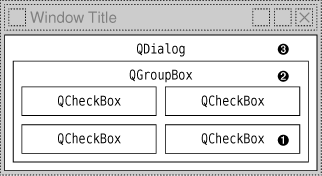

One really powerful feature of Qt's event model is that a QObject instance can be set to monitor the events of another QObject instance before the latter object even sees them.
Let's suppose that we have a CustomerInfoDialog widget composed of several QLineEdits and that we want to use the Space key to move the focus to the next QLineEdit. This non-standard behavior might be appropriate for an in-house application whose users are trained in its use. A straightforward solution is to subclass QLineEdit and reimplement keyPressEvent() to call focusNextChild(), like this:
void MyLineEdit::keyPressEvent(QKeyEvent *event)
{
if (event->key() == Qt::Key_Space) {
focusNextChild();
} else {
QLineEdit::keyPressEvent(event);
}
}This approach has one main disadvantage: If we use several different kinds of widgets in the form (e.g., QComboBoxes and QSpinBoxes), we must also subclass them to make them exhibit the same behavior. A better solution is to make CustomerInfoDialog monitor its child widgets' key press events and implement the required behavior in the monitoring code. This can be achieved using event filters. Setting up an event filter involves two steps:
1. | Register the monitoring object with the target object by calling installEventFilter() on the target. |
2. | Handle the target object's events in the monitor's eventFilter() function. |
A good place to register the monitoring object is in the constructor:
CustomerInfoDialog::CustomerInfoDialog(QWidget *parent)
: QDialog(parent)
{
...
firstNameEdit->installEventFilter(this);
lastNameEdit->installEventFilter(this);
cityEdit->installEventFilter(this);
phoneNumberEdit->installEventFilter(this);
}Once the event filter is registered, the events that are sent to the firstNameEdit, lastNameEdit, cityEdit, and phoneNumberEdit widgets are first sent to the CustomerInfoDialog's eventFilter() function before they are sent on to their intended destination.
Here's the eventFilter() function that receives the events:
bool CustomerInfoDialog::eventFilter(QObject *target, QEvent *event)
{
if (target == firstNameEdit || target == lastNameEdit
|| target == cityEdit || target == phoneNumberEdit) {
if (event->type() == QEvent::KeyPress) {
QKeyEvent *keyEvent = static_cast<QKeyEvent *>(event);
if (keyEvent->key() == Qt::Key_Space) {
focusNextChild();
return true;
}
}
}
return QDialog::eventFilter(target, event);
}First, we check to see whether the target widget is one of the QLineEdits. If the event was a key press, we cast it to QKeyEvent and check which key was pressed.
If the pressed key was Space, we call focusNextChild() to pass focus on to the next widget in the focus chain, and we return true to tell Qt that we have handled the event. If we returned false, Qt would send the event to its intended target, resulting in a spurious space being inserted into the QLineEdit.
If the target widget isn't a QLineEdit, or if the event isn't a Space key press, we pass control to the base class's implementation of eventFilter(). The target widget could also be some widget that the base class, QDialog, is monitoring. (In Qt 4.3, this is not the case for QDialog. However, other Qt widget classes, such as QScrollArea, do monitor some of their child widgets for various reasons.)
Qt offers five levels at which events can be processed and filtered:
We can reimplement QObject::event().
By reimplementing the event() function, we can process events before they reach the specific event handlers. This approach is mostly needed to override the default meaning of the Tab key, as shown earlier (p. 168). This is also used to handle rare types of events for which no specific event handler exists (e.g., QEvent::HoverEnter). When we reimplement event(), we must call the base class's event() function for handling the cases we don't explicitly handle.
We can install an event filter on a single QObject.
Once an object has been registered using installEventFilter(), all the events for the target object are first sent to the monitoring object's eventFilter() function. If multiple event filters are installed on the same object, the filters are activated in turn, from the most recently installed back to the first installed.
We can install an event filter on the QApplication object.
Once an event filter has been registered for qApp (the unique QApplication object), every event for every object in the application is sent to the eventFilter() function before it is sent to any other event filter. This approach is mostly useful for debugging. It can also be used to handle mouse events sent to disabled widgets, which QApplication normally discards.
We can subclass QApplication and reimplement notify().
Qt calls QApplication::notify() to send out an event. Reimplementing this function is the only way to get all the events, before any event filters get the opportunity to look at them. Event filters are generally more useful, because there can be any number of concurrent event filters, but only one notify() function.
Many event types, including mouse and key events, can be propagated. If the event has not been handled on the way to its target object or by the target object itself, the whole event processing process is repeated, but this time with the target object's parent as the new target. This continues, going from parent to parent, until either the event is handled or the top-level object is reached.
Figure 7.2 shows how a key press event is propagated from child to parent in a dialog. When the user presses a key, the event is first sent to the widget that has focus, in this case the bottom-right QCheckBox. If the QCheckBox doesn't handle the event, Qt sends it to the QGroupBox, and finally to the QDialog object.
